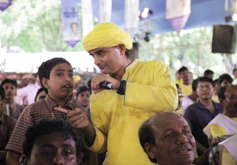
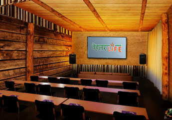
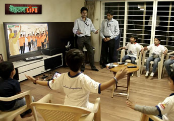
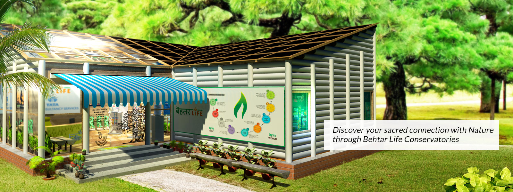
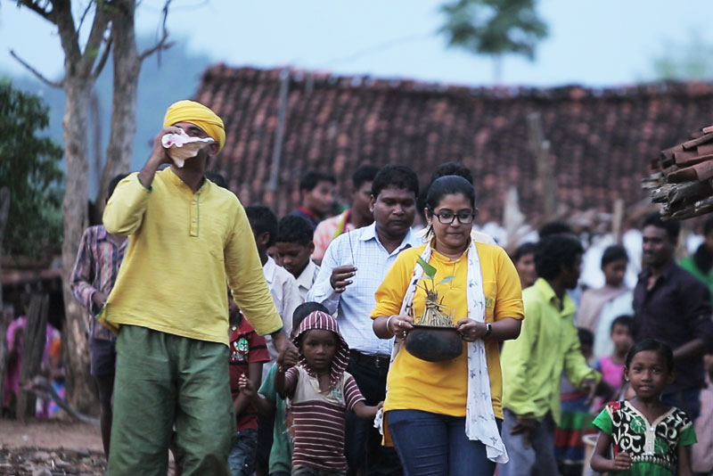
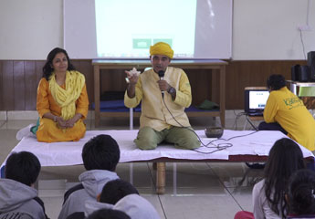
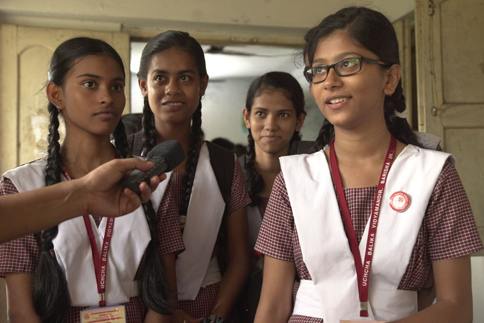
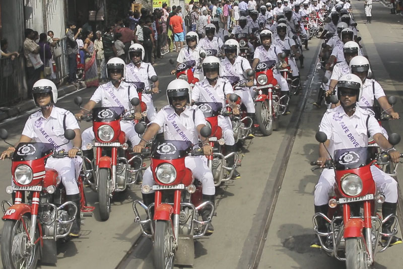

A steadier inner life.
Healthy mind and spirit
From anger toward equanimity, fear toward courage, arrogance toward humility. Hope, faith, gratitude, empathy, and a self that can look at itself.
Behtar means better. Life-skills a person needs, and a society needs.

Not just in who will lead them, but in how they choose to lead their lives.
For schools, colleges, young parents, senior managers, and grandparents. The art, the science, and the ethics of better living, in one practice.
A steadier inner life.
From anger toward equanimity, fear toward courage, arrogance toward humility. Hope, faith, gratitude, empathy, and a self that can look at itself.
Strength, breath, and stamina.
How the body stays well, and how prana (life-energy) is handled. Stamina, flexibility, strength, balance, immunity, power.
Words that keep a bond.
Satmangalmay bhasha (speech that wishes well). Listening, etiquette, leadership and followership, decisions, and a bond that is easy to live in.
A day with a rhythm.
Sanskars (habits) for daily life. Niyam (a rule) and saiyam (restraint), so a day is planned, a rule is kept, and work can be organised.
People, and the living world.
Societal values, diversity, and a living link with the ecosystem. Teamwork as self-mastery, not only as a meeting.
Use less. There is no away.
Smart consumption. Less is more. A tech-centred world, met with time-tested ways of living. When something is thrown away, there is no away.
OmniDEL (Omni-Dimensionally Engaging Learning) was made by Mahacharya Shri Sourabh J. Sarkar. A person is met in body, prana, mind, and spirit. NSDC recognised the method. Tata Trusts supported the work.
Awakening. The first camp, the first honest look.
Curiosity. Questions that stay after the session.
Deep study. Programmes at Foundation, Advanced, and Practitioners depth.
Dedicated practice. The club or studio that continues after the camp.
These figures are the ones published on behtarlife.in. They are a record of 2016 and 2017, not a live count.
100,000
Registered members in Kolkata had crossed this number by April 2017.
25
Learning clubs in traffic police stations of Kolkata, October 2016.
A room, a home, a green corner, or a session that comes to you. The same life-skills, carried to the people who will use them.

750 to 2,500 members. A school, office, college, or housing society, with a screen and a room built for the session.

Five to fifteen people. At home, in a gym, or in a cafe. A certified mentor runs it.

A green corner of about 1,400 sq ft on an office campus. Sessions inside. KarmYog Greens for employees and families.

Club Masters and community coordinators take the session to workplaces, schools, colleges, housing societies, and neighbourhoods.
Member, sponsor, host, or Club Master. Seva (service) is the purpose: better individuals, and a better world.
A lifetime of the practice. Attention, self-esteem in place of narcissism, integrity of thought and action, and health of body, energy, mind, and spirit.
A public cause, carried to the membership in more than one medium. Civic sense, skills, health, and the other causes Behtar Life already holds.
A club for a large community. A studio for a small circle. Partners also build a livelihood by running one.
For people who want to teach this. Certification follows the Foundation course and on-the-job training, with gyan (knowledge), kaushal (skill), and saadhna (practice) under Mahacharya Shri Sourabh J. Sarkar.
A room, a camp, or a whole ground.
Led by Mahacharya Shri Sourabh J. Sarkar and OmniDEL facilitators. Physical, praanic, mental, and spiritual.

Sixty minutes on Foundation topics. Certified mentors, OmniDEL learning-wares, and live sessions with Mahacharya when arranged.
Jaagran, Discovery, and Practitioners camps. Built to wake a group toward one mission.
A competition on a living theme: Swachh Bharat, health, road culture, water and sanitation, and more.
The general life-skills program works with these. A government or a philanthropy can reach the membership through them.

Learning that stays meaningful as it scales, and does not replace creativity with a race for degrees. KarmYog Gunakul is one shape of that work: children excel in the academic course without being crushed by it.
Change begins with the person. Use what you need. KarmYog Green Village invites people who can hold the old and the modern in one life.
Mass education in health and hygiene. With Howrah Municipal Corporation, Nirmol Poribesh Shushtho Jibon began with 36 key health workers.

Road culture for drivers, pedestrians, and students. Kolkata JAAAGO, with Kolkata Police, followed Safe Drive, Save Life.
Life-skills with livelihood. SRI for farmers in Odisha with Tata Trusts, migrant workers in Rajasthan, and vocational trainees in Dehradun, Nashik, Nagpur, and Kalyan, plus workplace leadership.
A better self. A better world.
KarmYog Ashram
MB-231, Sector-V, Salt Lake (E)
Kolkata 700102
KarmYog Foundation
Action Area-1, Newtown Rajarhat
Kolkata 700156